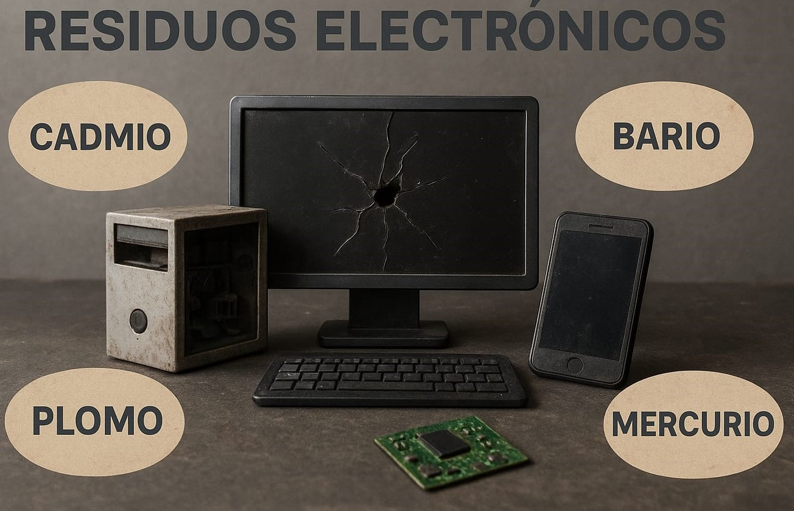

EcoPuerto - Menos residuos, más conciencia
EcoPuerto
Esta página nació con la idea de compartir, aprender y reflexionar sobre cómo nuestras acciones pueden cuidar el planeta. 🌎
Aquí queremos invitarte a conocer más sobre el reciclaje electrónico y su importancia para el medio ambiente.
Un proyecto hecho con dedicación por aprendices del programa de **Sistemas Teleinformaticos del SENA**,
comprometidos con construir un futuro más limpio y consciente.
Sobre Nosotros
En EcoPuerto creemos en un mundo donde la tecnología y la naturaleza pueden convivir en equilibrio.
Por eso trabajamos para informar y crear conciencia sobre la importancia del reciclaje de residuos electrónicos.
Misión
Promover el conocimiento sobre el reciclaje de residuos electrónicos y su impacto en el medio ambiente,
motivando a las personas y comunidades a adoptar prácticas sostenibles.
Visión
Ser una fuente confiable de información ambiental y tecnológica que impulse el cambio hacia un futuro
donde los residuos electrónicos sean gestionados de manera responsable y ecológica.
Propósito
Inspirar una conciencia ambiental que conecte la innovación tecnológica con el cuidado de la Tierra,
transformando los desechos electrónicos en oportunidades para un planeta más limpio.
¿Qué son los residuos electrónicos?
Los residuos electrónicos, también conocidos como RAEE (Residuos de Aparatos Eléctricos y Electrónicos),
son todos aquellos dispositivos o componentes que han llegado al final de su vida útil. Incluyen desde celulares, televisores,
computadores, baterías, impresoras y cables, hasta pequeños electrodomésticos como secadores o cargadores.
Estos residuos contienen materiales muy valiosos como oro, cobre, aluminio y plásticos, que pueden ser reutilizados y reciclados.
Sin embargo, también poseen sustancias peligrosas como plomo, mercurio, cadmio y níquel, que pueden contaminar el suelo,
el agua y el aire si no se gestionan correctamente.
🌍 Importancia de su correcto manejo
Reciclar los residuos electrónicos no solo ayuda a reducir la contaminación, sino que también
promueve un uso más eficiente de los recursos naturales. Al recuperar los materiales útiles, disminuye la necesidad
de extraer nuevos minerales, lo cual contribuye directamente a la protección del medio ambiente.

Ejemplo de proceso de reciclaje de residuos electrónicos.
♻️ ¿Cómo reciclar los residuos electrónicos?
El reciclaje de residuos electrónicos comienza con la recolección responsable de dispositivos que ya no funcionan
o que no se usan. Estos productos se clasifican según su tipo: computadoras, celulares, electrodomésticos, entre otros.
Luego, se desmontan cuidadosamente para recuperar materiales reutilizables como metales, plásticos y vidrios.
Los componentes peligrosos, como baterías o tarjetas electrónicas, se envían a plantas especializadas donde se tratan
de forma segura para evitar la contaminación ambiental.
Reciclar correctamente no solo reduce la contaminación, sino que también protege los ecosistemas,
evita que materiales tóxicos lleguen al suelo o al agua y permite que los metales valiosos sean reutilizados,
ahorrando energía y recursos naturales.
Materiales peligrosos en los residuos electrónicos
Los aparatos electrónicos están formados por una combinación de materiales útiles y otros que pueden resultar
altamente tóxicos si no se tratan adecuadamente. Estos elementos son una de las principales causas
de contaminación derivada de los residuos tecnológicos.
⚠️ Principales materiales peligrosos
- 🔹 Plomo (Pb): presente en soldaduras y pantallas. Daña el sistema nervioso y puede contaminar el suelo y el agua.
- 🔹 Mercurio (Hg): usado en monitores, lámparas y pilas. Muy tóxico para el ser humano y los ecosistemas acuáticos.
- 🔹 Cadmio (Cd): encontrado en baterías y chips. Causa daño a los riñones y se acumula en el ambiente.
- 🔹 Berilio (Be): presente en placas electrónicas. Su polvo puede ser cancerígeno si se inhala.
- 🔹 Plásticos con retardantes de llama: contienen sustancias químicas que, al quemarse, liberan gases peligrosos.
Por estas razones, los residuos electrónicos deben ser clasificados y tratados en plantas especializadas.
Solo así se evita que los metales pesados lleguen al medio ambiente y afecten la salud de las personas.

Ejemplo de quimicos en los residuos electrónicos.
🌍 Impacto ambiental y social del reciclaje electrónico
Los residuos electrónicos representan uno de los mayores desafíos ambientales del mundo moderno.
Cuando no se gestionan correctamente, sus componentes contaminan el agua, el suelo y el aire, afectando a millones de personas
y a los ecosistemas naturales. Sin embargo, su reciclaje responsable puede transformar esta amenaza en una oportunidad.
❌ Impacto negativo de no reciclar:
- Contaminación del agua por metales pesados como el plomo y el mercurio.
- Emisión de gases tóxicos al quemar componentes plásticos o cables.
- Daños a la salud humana en personas que manipulan residuos sin protección.
- Destrucción de ecosistemas y pérdida de biodiversidad.
✅ Beneficios sociales y ambientales del reciclaje:
- Se reducen los niveles de contaminación y las emisiones de CO₂.
- Se aprovechan los materiales valiosos, reduciendo la extracción minera.
- Se generan empleos verdes en centros de reciclaje y programas comunitarios.
- Se promueve una cultura ambiental responsable en las nuevas generaciones.
🌿 Cada acción cuenta: reciclar nuestros aparatos electrónicos ayuda a construir un planeta más limpio y justo.
🏢 Qué hacen las grandes empresas con los residuos electrónicos
Las grandes empresas tecnológicas tienen una gran responsabilidad en el manejo de los residuos electrónicos.
Muchas de ellas han creado programas de reciclaje y reutilización para reducir su impacto ambiental y fomentar la economía circular.
🌱 Programas y acciones destacadas:
- HP – Planet Partners: Programa global de recolección y reciclaje que convierte cartuchos y componentes electrónicos en nuevos productos.
- Dell – Reconnect: Iniciativa en colaboración con Goodwill que permite donar equipos usados para su reacondicionamiento o reciclaje seguro.
- Samsung – Re+: Red de centros de recolección donde los consumidores pueden dejar sus dispositivos electrónicos viejos de forma gratuita.
- Apple – Daisy Robot: Un sistema automatizado que desmonta iPhones y recupera materiales como oro, cobre y litio para nuevos dispositivos.
🌍 Beneficios de estos programas:
- Disminuyen la contaminación y la acumulación de desechos tecnológicos.
- Reutilizan materiales valiosos como el aluminio, el plástico y los metales preciosos.
- Fomentan una cultura de responsabilidad ambiental en los consumidores.
- Apoyan el desarrollo de empleos verdes y sostenibles.
Cómo podemos ayudar desde casa
Cada persona puede ser parte del cambio. Aunque los residuos electrónicos parezcan un problema grande,
nuestras acciones en casa pueden marcar la diferencia. Cuidar el planeta comienza con decisiones simples y responsables.
🌿 Acciones que todos podemos realizar:
- No tirar los aparatos electrónicos a la basura común. Guardarlos hasta encontrar un punto de reciclaje.
- Reutilizar equipos viejos si aún funcionan o donarlos a instituciones educativas o sociales.
- Evitar comprar dispositivos nuevos si los actuales siguen siendo útiles.
- Separar los cables, pilas y baterías del resto de los residuos.
- Informarse sobre los programas de recolección en la ciudad o municipio.
- Motivar a amigos y familiares a unirse al reciclaje electrónico.
🌱 Recuerda:
Cada teléfono, computador o batería que reciclas correctamente evita que sustancias tóxicas lleguen al ambiente
y permite que materiales valiosos se reutilicen en nuevos productos.
¡Pequeñas acciones crean grandes cambios!
🌿 Espacios verdes y naturaleza
La naturaleza es nuestro hogar y el equilibrio de la vida depende de cómo la cuidemos.
Cada acción que hacemos por el medio ambiente, desde reciclar hasta sembrar un árbol,
contribuye a mantener el planeta sano y lleno de vida.
🌎 Importancia de los espacios verdes:
- Purifican el aire y reducen la contaminación en las ciudades.
- Regulan la temperatura y protegen la biodiversidad.
- Brindan bienestar físico y mental a las personas.
- Fomentan una cultura de respeto y amor por la naturaleza.
🌱 Cuidar el planeta es tarea de todos:
Mantener parques limpios, sembrar árboles, cuidar el agua y reciclar son pequeñas acciones
que fortalecen los espacios verdes y garantizan un futuro mejor para las nuevas generaciones.